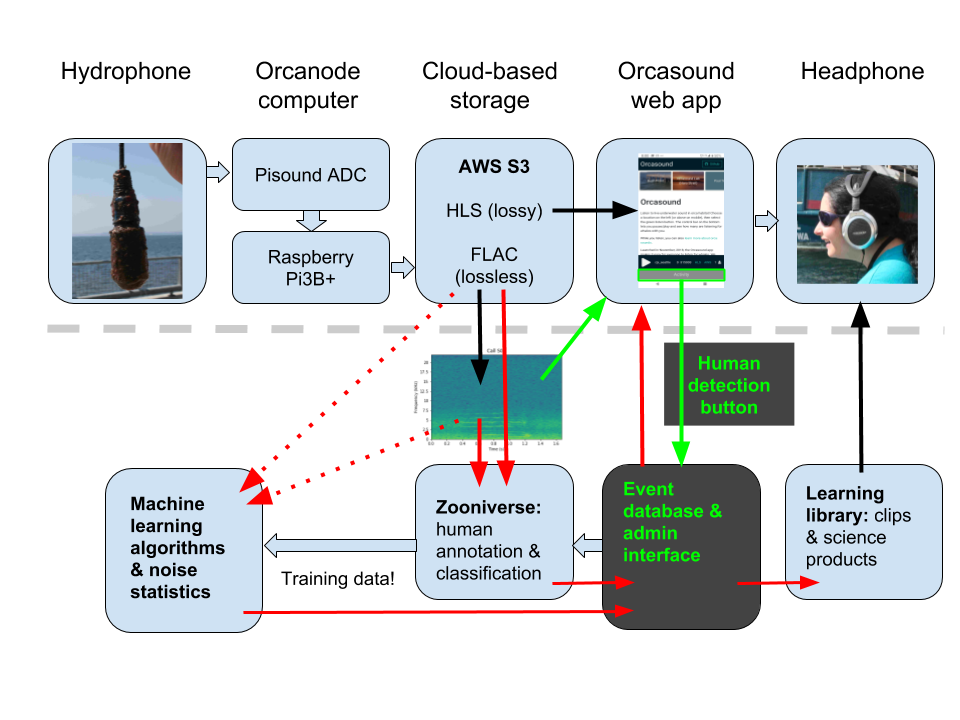
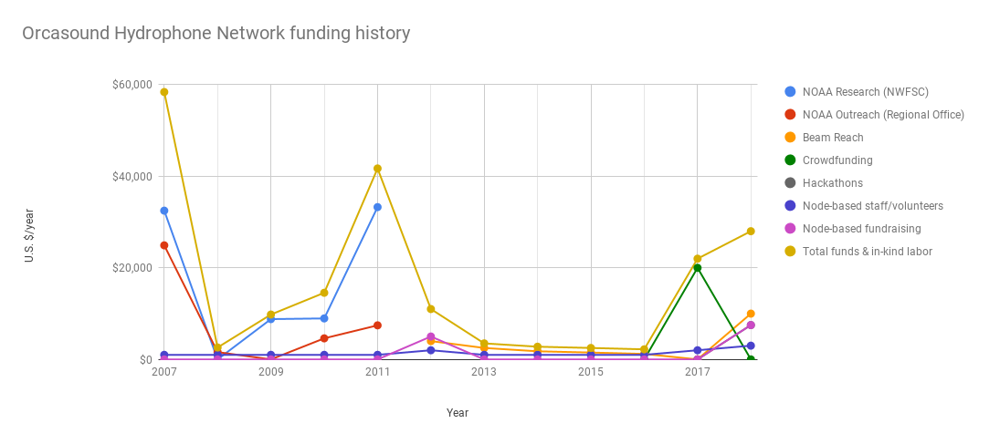
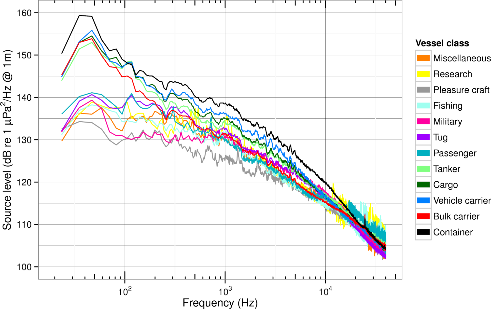
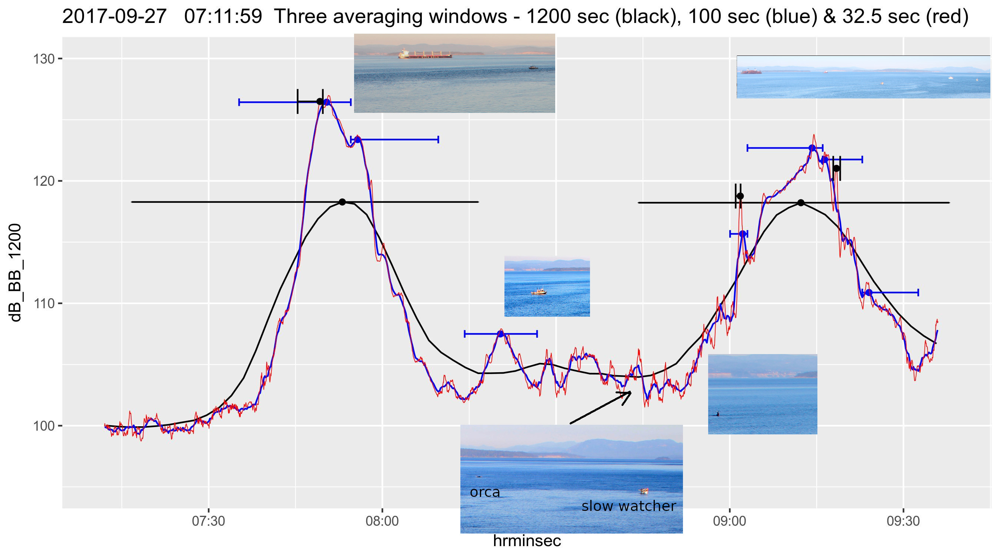
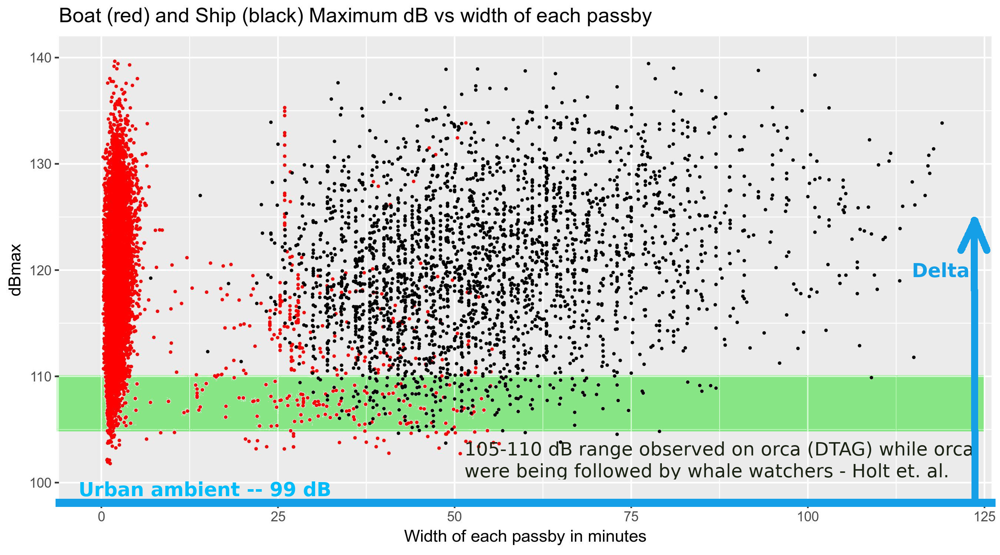

Autonomous recorders or other non-real-time hydrophones
Critical habitat NOAA assets (PALs, EARS, etc.)
Many past deployments in SRKW habitat (APL/PALs, MARUs, HARPs, ULS, SoundTraps, etc.)
Other real-time sources of SRKW detections and/or non-cabled audio
Wavegliders (humpbacks)
SMRU CABs
Canadian radar, thermal cameras, machine learning
Vast and growing network of Salish Sea marine sensors, e.g. gliders (NANOOS/NVS)
Orcasound
An evolving tool for SRKW conservation

The product of 15 years of citizen scientists listening for whales, Orcasound is now a cooperative hydrophone network and an innovative open-source hardware/software project.
Orcasound funding history and future
From NOAA/WDFW contracts/grants to crowd-funding, philanthropy, and hackathons

Orcasound 2019-2020 map and membership
Cooperative of researchers, educators, & citizen scientists
Orca Network
Port Townsend Marine Science Center
Beam Reach & Colorado College
The Center for Whale Research
The Whale Trail
Oceans Initiative
Orca Behavior Institute
Whale Scout
Deep Green Wilderness
Friends of Lime Kiln Society (FOLKS)
Cetacean Research Technology
5 physical exhibits: Seattle Aquarium; Port Townsend Marine Science Center; Langley Whale Center; Lime Kiln Visitor's Center (via FOLKS)
There are many ways to "more than mitigate" vessel noise.

Operational (temporary) and technological (permanent)
Broadband received level peaks
Ships and boats have similar maxima, but ships last longer
Peak validation example: 2 ships, boats, & SRKWs
Compared to fast boats, slow ones have lower maxima, and sometimes last longer

Smooth curve (black) is 1200-second running average broadband dB level
Proposal for new acoustic metrics
Urban ambient noise level: a baseline for "delta" noise metrics for SRKWs

Holt et al., 2017, Endangered Species Research
Orcasound as partner in tracking Salish Sea wildlife
Together we can detect and protect the SRKW (with cool tech, like...)
Localization of SRKW calls
2009: SRKWs "speak up" in noise from nearby boats (Holt, Noren, Veirs, Emmons & Veirs)
Link to animation of call/response animation (cite Veirs, Wood, etc.)
Orcasound as partner in tracking Salish Sea wildlife
Evolution of machine learning (from edge to cloud and back again?)
Emerging SRKW ML:
Add image from Erica youtube or Akash?
Admiralty Inlet study (unpublished) -- Of 22 SRKW transits during local daytime,
humans detect 45%, Wholistener 64%, combined 77%.
Orcasound as partner in tracking Salish Sea wildlife
Synergy of sighting and listening networks
Orcasound as partner in tracking Salish Sea wildlife
Many apps & initiatives emerging to gather and share real-time marmam data
Questions?
Vessel noise mitigation
There are many ways to "more than mitigate" vessel noise.
Operational (temporary) and technological (permanent)
Orcasound's network, new nodes and app
15 years of citizen scientists listening for whales in the Salish Sea
Thanks to all the backers of the 2017 Kickstarter, plus our app key developers/designers to date:
Paul Cretu, Skander Mzali, Steve Hicks, Tyler Crisafulli, Nóra Mészáros, and Liam Reese


 Right whale stress fell after 9/11 decreased ship noise in 2001 (Rolland et al., 2012)
Right whale stress fell after 9/11 decreased ship noise in 2001 (Rolland et al., 2012)